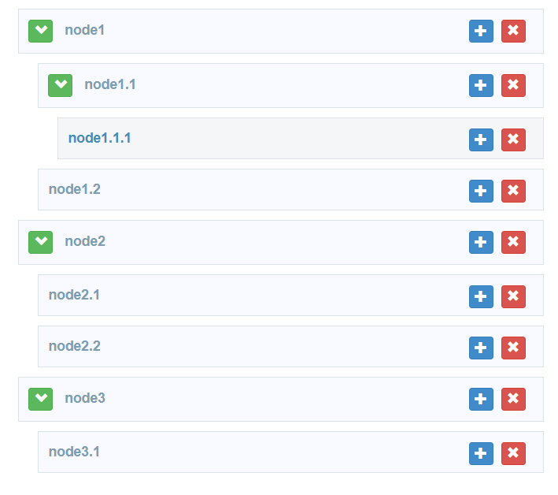
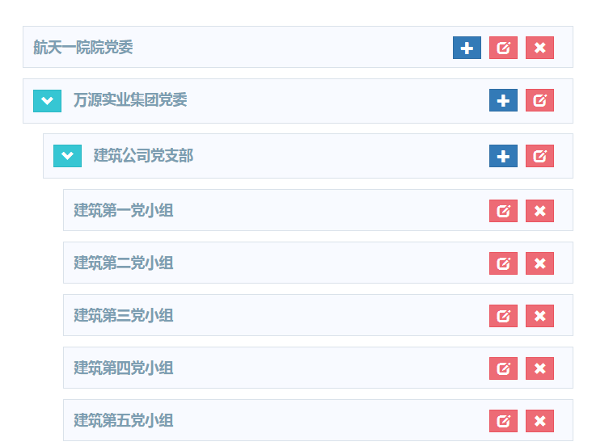
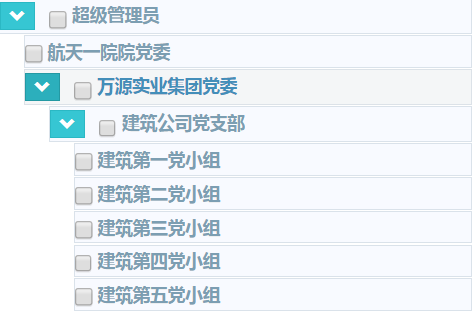

总结分享下我关于这个插件的使用与体会，三个方面
- 插件作用
- 使用流程
- 数据库表数据
- 获取所有数据
- 数据处理
- 页面显示
- 搭载checkbox
- 页面显示
- 子父级联动
- 回显
- 坑
插件作用
具备所有tree插件的特点，显示分支形式的数据，可折叠，可修改，添加同级别，子级别数据。实际应用：例如 组织机构树，本篇我们将用此案例进行演示。
angular-ui-tree还有如下特点：
1.使用本地AngularJS范围数据绑定
2.整个树都可以进行排序和移动项目
官方demo截图

数据源1
2
3
4
5
6
7
8
9
10
11
12
13
14
15
16
17
18
19
20
21
22
23
24
25
26
27
28
29
30
31
32
33
34
35
36
37
38
39
40
41
42
43
44
45
46
47
48
49
50
51
52[
{
"id": 1,
"title": "node1",
"nodes": [
{
"id": 11,
"title": "node1.1",
"nodes": [
{
"id": 111,
"title": "node1.1.1",
"nodes": []
}
]
},
{
"id": 12,
"title": "node1.2",
"nodes": []
}
]
},
{
"id": 2,
"title": "node2",
"nodrop": true,
"nodes": [
{
"id": 21,
"title": "node2.1",
"nodes": []
},
{
"id": 22,
"title": "node2.2",
"nodes": []
}
]
},
{
"id": 3,
"title": "node3",
"nodes": [
{
"id": 31,
"title": "node3.1",
"nodes": []
}
]
}
]
使用流程
本小节按照以下流程进行：
- 数据库表结构
- 获取所有数据
- 数据处理
- 页面显示
- 搭载checkbox
- 页面显示
- 子父级联动
- 回显
1 | 为了便于大家的学习与使用，我以一个完整的案例进行演示。大家可酌情选看适合自己的小小节。 |
数据库表结构
table_name :party_group
| 机构id | 上级id | 机构名称 | 级别 | 能否有下一级 |
|---|---|---|---|---|
| nId | nPid | vcName | nLevel | bLeaf |
| 1 | 0 | 万源实业集团党委 | 1 | 1 |
| 2 | 0 | 航天一院院党委 | 1 | 1 |
| 3 | 1 | 建筑公司党支部 | 2 | 1 |
| 4 | 3 | 建筑第一党小组 | 3 | 0 |
| 5 | 3 | 建筑第二党小组 | 3 | 0 |
| 6 | 3 | 建筑第三党小组 | 3 | 0 |
| 7 | 3 | 建筑第四党小组 | 3 | 0 |
获取所有数据
1 | select * from party_group |
后台简单的查询所有就可以，数据处理交给自由的js。1
2
3
4
5
6
7
8
9
10
11
12
13
14
15
16
17
18
19
20
21
22
23
24
25
26
27
28
29
30
31
32
33
34//获取机构
$scope.getPartyGroup = function () {
$http.get(BASEURL+'/partyGroup/getPartyGroup').success(function(resData){
$scope.groups = resData.list;//将数据存入$scope.groups；list是我后台存储的键
//获取所有一级列表
var topArray = [];
//一级列表就是上级id为0的数据，存入数组 topArray
for(var i=0 ;i < $scope.groups.length; i++){
if($scope.groups[i].nPid == 0){
topArray.push($scope.groups[i]);
}
}
//递归装配子集合
$scope.fillTree(topArray);
console.log(topArray);//打印验证一下
$scope.data = topArray;//储存处理好的数据，交由模板处理生成页面
console.log($scope.data);//打印验证一下
});
};
//递归获取当前集合的下一级别数据
$scope.fillTree = function (array) {
if(array!=null){
for(var item in array){
var childArray = [];//当前的子集合
for(var i =0;i < $scope.groups.length; i++){
if($scope.groups[i].nPid == array[item].nId){
childArray.push($scope.groups[i]);
}
}
array[item].subGroup = childArray; //tree的关键子集合属性
$scope.fillTree(childArray);
}
}
};
这里有三个注意的点
- js 既不是按值传递(call by value)，也不是按引用传递(call by reference)，而是按共享传递 （call by sharing），这决定了
topArray的数据为第一级列表与所有后代数据的集。 - 交由
template处理的数据data，类型必须为array。 - 每层数据对象都要包含自己的子对象数组属性，我这里起名为
subGroup，以供页面模板嵌套生成。
页面显示
1 | <!-- 模板部分，包含折叠，添加，修改，删除功能 --> |
好了，现在就可以查看效果了

搭载checkbox
在模板上添加checkbox1
2
3
4
5
6
7
8
9
10
11
12
13
14
15
16
17
18
19
20
21
22
23
24
25<!-- 模板部分，包含折叠，勾选功能 -->
<script type="text/ng-template" id="nodes_renderer">
<div ui-tree-handle class="tree-node tree-node-content" style="margin-left: 0px">
<a class="btn btn-success btn-xs " ng-if="group.subGroup && group.subGroup.length > 0" data-nodrag ng-click="toggle(this)">
<span class="glyphicon" ng-class="{'glyphicon-chevron-right': collapsed,'glyphicon-chevron-down': !collapsed}"></span>
</a>
<input name="groupCheck" type="checkbox" style="vertical-align: bottom;width:15px;height:15px;margin-right:3px;"
ng-click="checkClick(this)" ng-checked="group.isCheck" value="{{group.nId}}" >{{group.vcName}}
</div>
<ol ui-tree-nodes="" ng-model="group.subGroup" ng-class="{hidden: collapsed}">
<li ng-repeat="group in group.subGroup" ui-tree-node ng-include="'nodes_renderer'">
</li>
</ol>
</script>
<!-- 通过新属性 isCheck 判断是否勾选-->
<!-- 瘦身，紧凑的css，可不写 -->
<style>
.tree-node-content {
margin: 1px;
}
.angular-ui-tree-handle {
padding: 2px 0;
}
</style>
效果图

1 |
|
回显的思想
- 获取已选择的机构的集
- 根据1的集，标记所有机构对象的
isChecked属性 - 模板生成
坑
提供给模板的数据必须是数组Array类型，单个元素的话，页面生成会看不到数据，只有空白的条条，试了很久才发现，有点难受。
就写到这里，欢迎指教~
最后更新于 2018-05-10